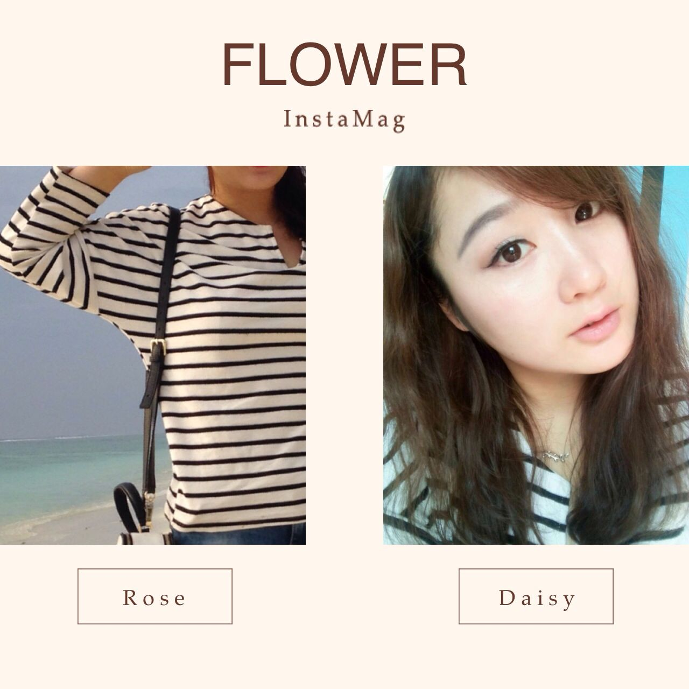

名字:
妙蛙桃子
性别:女
介绍:
问题
答案
新建于:2015-03-15 01:30:17 AM，更新于2015-03-23 02:59:10 PM
Pre上一页
Next下一页
跳页:
正文: … …身高163体重65kg 胸d… …哦套马的姑娘你大臂威武雄壮！侧面看自己简直会被惊住！
先来个特别恐怖的大膀子图吧
而且头发巨少…！还很细软！还特么自来卷！
减肥路长而远尤其身为一个没毅力的吃货我能说自己最成功的减重也就坚持到60kg么？但是…也不能因此自暴自弃吧… …
所以胸大就最好不要穿市面卖的那种文胸，其实淘宝那种超薄不聚拢的是非常好的选择… …
发现蝙蝠袖、宽大的袖子办小清新容易一些（抓机拍，请不要吐槽我不是小清新）这种开衫我有好几件…可以搭配短裙长裙甚至旗袍…搭小清新的各种衣服也是木有问题…不过我搭配的很烂…话说这些算小清新么… 唉至少我有颗小清新的心…
有多少小清新淘宝店里买回的衣服被我当成了睡衣啊…哭泣
（对了这张头发是假发片接的别研究了头发少的痛啊… …）
继续开衫
（冬季的长开衫）
拍照用的汉服大衫… 和花开衫…
但是也不能一直开衫蝙蝠袖丧心病狂啊…所以冬秋推荐包手臂比较好的直桶外衣
比较赞同前面说的…冬天就是要收胸，收了胸你可以搭各种你想要的…看看我的大粗腿！
虽然还是看起来很粗… …但相信我真人手臂更粗… …比我蓝朋友都粗… …
这个条纹平时我不太敢尝试！但效果很不错！关键就是袖子那是大蝙蝠…领子开的比较大，有点小露…视线也下移
补充：
如果不遮胸…就会出现这样恐怖的事情
结婚那天拍的侧影
婚纱里面只穿了薄硅胶
还好婚纱下摆造型非常大，夸张，显得上面娇小。不然就是金刚芭比的感觉
Pre上一页
Next下一页
跳页: